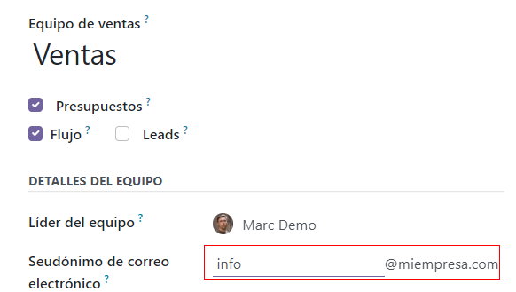
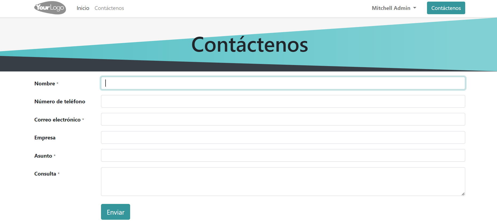
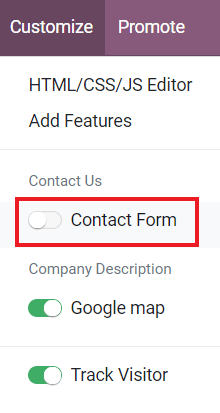
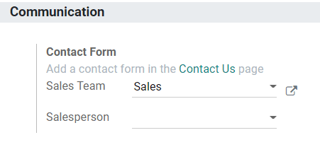
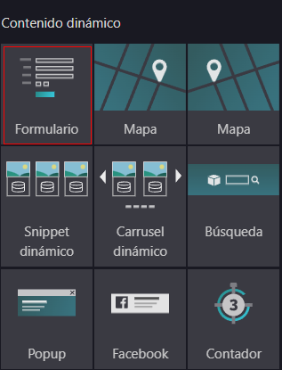
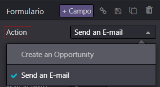

Generate leads/opportunities¶
Two key ways to generate new leads or opportunities for your business are through email aliases and website contact forms. Odoo automatically creates leads in your CRM whenever someone sends a message to a Sales Team email alias or fills out a contact form on your website.
Configure email aliases¶
Each Sales Team can use its own unique email alias to generate leads/opportunities. Any email sent to a Sales Team’s email alias will automatically create a lead (if leads are activated in your CRM settings) or an opportunity in the pipeline for that particular team. Configure custom email aliases on the configuration page for each Sales Team by navigating to .
Use Contact Forms on your website¶
By default, your website’s Contact Us page displays Odoo’s ready-to-use Contact Form. Whenever someone submits this form, a lead or an opportunity is generated in your database.
The Contact Form can be activated or deactivated at any time by going to .
When the Form is deactivated, the Contact Us page simply displays a button to email your company directly. Any email sent this way will generate a lead/opportunity.

Choose which Sales Team or salesperson is automatically assigned to the leads/opportunities created from the Contact Form by going to .
Customize Contact Forms¶
Contact Forms can be customized for the specific information your team needs, using the free Form Builder module.
The Form Builder module is installed automatically when a Form element is added to a web page via the Website Builder. It can also be installed manually from the Apps page.
Tip
Forms can be created from scratch to serve a wide variety of purposes. However, Odoo’s default Contact Us page is designed to fit most users’ needs. Start with the default form and modify from there.
Edit Contact Form fields¶
In Edit mode on your website, click on any field to start editing it. The following information can be edited for each field on the Contact Form:
Type: Choose a custom field option or an existing field. Examples include phone, file upload, language, etc.
Input Type: Determine the type of entry customers should input. Available options are text,email, telephone, and URL.
Input Placeholder: Type in an example to guide users how to input information where formatting is important, such as a phone number or email address.
Label Name: Type in the display name to show users what information is needed from them.
Label Position: Choose the way the label is aligned with the rest of the form. The label can be hidden, above the field, to the far left of the field, or right adjusted and closer to the field.
Required: Toggle this option for information that you absolutely need entered.
Hidden: Toggle this option to hide the field without deleting it.
Shown on Mobile: Toggle this option to show the field to users on mobile devices.
By default, when a Form is submitted, it sends you an email with the customer’s inputted information. To have it automatically generate a lead/opportunity instead, edit the Form and select Create an Opportunity as the Action.
Tip
If leads are activated in your CRM settings, selecting Create an Opportunity generates a lead instead. To learn more about activating leads in the CRM settings, head over to Convert leads into opportunities.